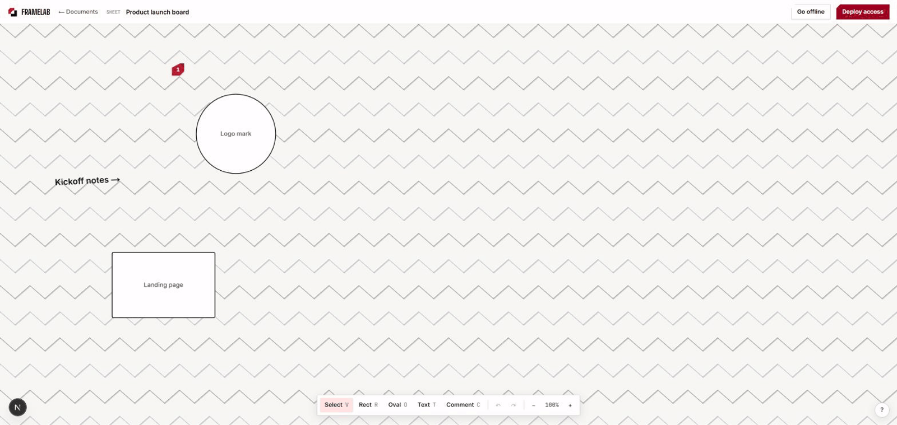

02 Real-time systems · Solo build
FrameLab is a live, real-time collaborative canvas — Figma-shaped: an infinite surface where a team drops shapes, leaves comments, and watches each other's cursors move. I designed and built it solo, end to end. The interesting part isn't that it syncs; it's that a Viewer still can't write a shape, even with a raw socket and a hand-crafted packet.

Status
LIVE
deployed & running today
Built by
Solo
design → ship, end to end
Enforcement
ON THE WIRE
not hidden in the UI
01 The problem
Most collaborative demos broadcast state to everyone and call it multiplayer — read-only means a disabled button, and the server trusts whatever the client sends. That holds up exactly until someone opens devtools. Two things are genuinely hard: merging concurrent edits from several people without a central lock and without losing work, and making a permission mean something at the layer where edits actually travel. FrameLab treats both as the product.
02 What I built
A Next.js app on Vercel that owns sign-in and is the only thing with authority over Postgres; a separate always-on Node process on Railway holding one websocket per connected browser, relaying and policing edits; and a shared Postgres for who-owns-what plus a periodic snapshot of each canvas. The canvas itself is raw Canvas 2D — no canvas library — with the maths in a zero-dependency package that's property-tested. Concurrent edits merge through a CRDT (Yjs) rather than a lock. 197 unit tests and about 30 Playwright end-to-end tests, including a multiplayer spec that drives two browsers at once. Built in numbered phases over six weeks, each with a written design spec before any code — and it's deployed and running right now, not sitting behind a git clone waiting to be demoed.
Live cursors, two sessions, a role revoked mid-edit
03 The split
Postgres owns anything that needs authority — who you are, who owns a document, who's allowed to edit it. A conflict-free replicated document (Yjs) owns anything with concurrent multi-writer edits. The relay in the middle is the only place a role can be enforced, because it's the one participant the editing client doesn't control — a Viewer could otherwise grant themselves Editor by writing the change into their own CRDT replica, so the check has to live outside the CRDT, on the server relaying it.
The split — authority left, concurrency right
04 Under the hood
A write gate that fails closed
If your role says you can't edit, you can't edit — not "the buttons are greyed out," but the server refuses the bytes and repairs the document.
The gate starts unchecked, not not-violated, so a listener that never fires rejects the write instead of waving it through. Rejected updates are reverted with a zero-timeout UndoManager, and the correction is sent back to the offending connection alone.
Two exploits I had to find first
The obvious version of this check passes review and still leaks. I broke my own gate twice before it held.
Yjs integrates structs before reading an update's trailing delete set, so truncating one byte let a Viewer's shapes land and then throw. Separately, updates referencing unintegrated clocks get buffered and replayed later under a different connection's role — the gate now treats any buffering as illegitimate and fails closed.
Offline is a guarantee, not a spinner
Close the laptop mid-edit on a dead network, open it tomorrow, and the canvas is exactly where you left it.
The Y.Doc persists to IndexedDB, and the boot order is deliberate: attach local storage, await whenSynced, paint, then dial the websocket. Snapshots flush to Postgres 2s after the last edit, 10s hard cap — and a room flushes before it's evicted, or a reconnect mid-flush would silently roll the document back.
A canvas that doesn't re-render
Dragging a shape stays smooth with a room full of people in it.
Shapes live outside React entirely — pushed straight to the renderer, so a drag never re-renders a component. In-flight gestures sit in a ref, two overlay layers merge per frame so a mid-drag React update can't wipe the preview, and device pixel ratio is clamped at 2.